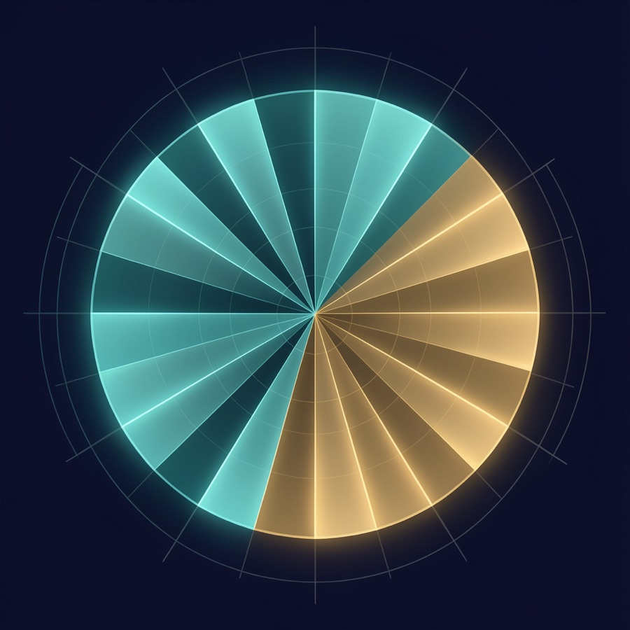

Where are you in the journey?
Pick the one that fits you today. You can always change paths — the system grows with you.
I'm a student nurse
Learn deeply, reason for yourself, and stop drowning in readings — with AI as a tutor, never a crutch.
Start here →I'm a staff nurse
Reclaim time and presence. Let a safe, no-PHI system carry the prep, the inbox, the admin, and the busywork.
Start here →I'm a leader or educator
Bring AI to your unit safely — with a governance method that protects your team, your students, and your patients.
Start here →Not sure yet? Start with the SOUL Quiz — it will help you name your first safe step.
Florence's two instruments, in your hands
In the Crimean wards, Florence Nightingale did two things at once. She held the lamp — she stayed present, she comforted, she protected human dignity at the bedside. And she kept the ledger — she gathered data, built her famous rose diagram, and showed that poor sanitation, not battle, was killing most soldiers. Compassion told her to act; evidence told everyone else they had to.
That union — the caring heart and the counting mind — is the whole point of this course. AI and data science are not here to replace the nurse who notices. They are here to extend her reach, lighten her load, and let her light fall on more people.
Our line: Hermes supports. Humans judge. Nurses steward.

The same lamp, at every stage of the journey
Whether you are learning the profession, carrying a full assignment, or shaping a whole unit, you face the same modern ache: too much information, too little time, and a quiet fear that the documentation is crowding out the patient. This course meets you where you are — and points you toward who you want to become.
Drowning in readings, care plans, and NCLEX prep. Unsure what matters, anxious about clinicals, afraid of falling behind, and tempted to let AI think for you instead of with you.
- A Learning OS that turns lectures, articles, and videos into clear study notes and self-tests
- “Think first, then consult AI” habits that build real clinical reasoning
- A calm system for deadlines, energy, and wellbeing so school does not consume you
A nurse who learns deeply, reasons independently, and trusts her own judgment — using AI as a tutor, never a crutch.
Buried in charting, hand-offs, emails, and policy updates. Cognitive overload, alert fatigue, and the heartbreak of having less time at the bedside than the work on the screen.
- A Chief-of-Staff OS for daily briefs, weekly review, and energy protection
- Safe, no-PHI workflows that draft, summarize, and organize the non-clinical load
- Ergonomics, focus blocks, and shutdown rituals that defend your body and attention
A nurse who reclaims time and presence — letting the system carry the busywork so you can carry the patient.
Asked to “do AI” without a method. Worried about safety, privacy, equity, and adoption — and about protecting staff and students from one more tool that adds burden instead of removing it.
- A governance method: HERMES, EDENA, profiles, approval gates, and connector boundaries
- Team Lab and workshop blueprints to train staff and faculty safely
- Evaluation questions that judge any tool by workload, safety, equity, and human connection
A Nightingale for your unit — bringing evidence-led, dignity-first AI to your team without losing the heart of nursing.
One promise across all three: by the end you do not just “use AI” — you steward it. You hold the lamp and you keep the ledger, exactly as Florence did, so technology serves the human in the bed and the human giving the care.
Course promise
By the end, every nurse — student, staff, or leader — has a working AI OS folder, starter prompts, safety boundaries, learning workflows, career and project templates, and governance checklists. Not theory. A system you actually run on day one.
Core rule: Hermes supports. Humans judge. Nurses steward.
Nurse-centeredEvidence-awareSystems-thinkingSafety-firstDignity-protectingStart with the heart of nursing
A good nurse sees the whole situation: the person, family, environment, stressors, relationships, risks, supports, and small changes that matter. That is the same eye Florence trained on the wards. This course brings that posture into an AI operating system — tools shaped around the patient and the nurse, not the other way around.
Hermes becomes a stewarding support system: balanced, care-giving, empowering, human-agency preserving, and accountable to the nurse’s judgment.
The three spheres
1. Personal
Daily planning, weekly review, wellbeing, energy, family, finances, reflection, goals, and decision support.
2. Professional
Learning pathways, career maps, certification planning, research review, meeting prep, leadership reflection, and non-PHI work support.
3. Community / Entrepreneurial
Community listening, project roadmaps, ethical entrepreneurship, content planning, pilot design, and nurse-led innovation.
Personal profiles
Hermes profiles let you keep personal projects, learning, and professional non-PHI work separated. Each profile has its own configuration, SOUL, memories, sessions, skills, cron jobs, and identity.
Recommended beginner set: Personal Projects, Personal Learning, and Professional Non-PHI.
Boundary: profiles help separate work, but they are not a substitute for privacy governance or clinical review.
Knowledge inbox workflow
For learning and personal knowledge, start with one inbox workflow: turn articles, videos, podcasts, papers, and notes into structured markdown learning notes using the HERMES Transformation Protocol.
Add a weekly learning review only after the manual workflow works. Cron jobs run in fresh sessions, so prompts must be self-contained.
Six-week guided build
Heart Before Tools
Define your AI values, no-PHI boundary, and human-agency rules before installing workflows.
Set Up Hermes Desktop Safely
Install Hermes on macOS using the official Desktop .dmg path, complete first-run onboarding, orient to sessions, skills, tools, messaging, settings, providers, memory, and safety controls. Set the workspace to your course folder, keep manual approvals on, protect API keys, and create separated profiles for Personal Projects, Personal Learning, and Professional Non-PHI use.
Build Your Nurse-Centered Chief of Staff
Create daily brief, weekly review, personal dashboard, and energy-protection workflows.
Build Your Learning OS
Turn topics into pathways, practice scenarios, self-tests, evidence checks, and human mentor questions.
Build Your Professional + Community OS
Create career maps, project dashboards, community needs maps, and smallest-safe-pilot plans.
Govern, Review, and Sustain
Use HERMES, EDENA, loop charters, stop conditions, and a 30-day maintenance plan.
PDF Workbook
A self-contained course workbook with modules, prompts, frameworks, and 30-day sustainment plan.
Source Markdown
Editable workbook version for Obsidian, Notion, GitHub, or future course revisions.
30-Day Nurse AI OS Roadmap
A free, step-by-step plan to build your AI OS in 30 days. Three tracks: student, staff nurse, and leader. ~20 minutes a day.
The Lamp Huddle
Weekly 45-minute live community call for nurses building their AI OS. Free. Stewardship first. Launches the week of July 4.
SOUL Quiz (self-serve)
A free 15-minute browser quiz that drafts your tailored SOUL.md files for every active sphere. No data leaves your device.
Life & Projects Quiz
Map your whole life across three spheres and turn each active area into a ready-to-use, governed project system prompt. Includes a life-coverage check so you don't miss what matters.
AI Global Builder Academy
Country lanes for the AI Global Builder Incubator Academy: no-PHI pathways for nursing schools, associations, nurse innovators, students, faculty, mentors, and AI ecosystem partners.
NAIO OS v2.0.0 Phase 23
23 governed packs live: a signed, no-PHI control-plane release for activation, launch, cohort mode, evidence, contribution, institutional stewardship, localization readiness, the Adoption & Outcomes Ledger, and the new Commercial Activation Pack.
Founding Steward Cohort
A small 6-week guided build for nurses who want to create a governed, no-PHI AI practice across personal, professional, and community / entrepreneurial life.
Video walkthroughs — first version
Record these as six short screen-share videos. The scripts are included now so the course can launch before the full video library is produced.
Walkthrough set
- Welcome: A System with the Heart of a Nurse
- Install Hermes Desktop and Set Safe Boundaries
- Build Your Nurse-Centered Chief of Staff
- Build Your Learning OS
- Build Your Professional + Community OS
- Govern, Loop, and Sustain
Capabilities, introduced in the right order
The sections that follow — integrations, media, research, messaging, visual workflows, wellbeing, and Workspace governance — are the instruments of your operating system. Each is introduced only after the no-PHI foundation is solid, and each is framed the same way: what it does for you, and the boundary that keeps it safe. Think of them as additions to Florence's bag: useful only in service of the patient and the nurse, never for their own sake.
Practical integrations
After the basic no-PHI workspace works, the course adds integration pathways for notes, Notion, Google Workspace, and GitHub. Each connector is treated as a doorway that needs least-privilege access, approval gates, and a human owner. Notion is framed as an operations and knowledge cockpit — never as an EHR, clinical decision support tool, credentialing system, or place for PHI.
Apple Notes → Obsidian → Hermes
Move Apple Notes into an Obsidian markdown vault, then let Hermes search, create, and refine notes through the vault folder.
Obsidian + Hermes second brain
Sync your Obsidian vault across devices and a VPS so skills, SOPs, and memory become living files you can see, edit, and audit. The agent reads context only when relevant.
SOUL Interview Agent
A guided AI interview that helps you draft tailored SOUL.md files for every active sphere — Personal, Professional, Community, Side Gig, Interest — with EDENA tiers assigned at onboarding.
Notion Command Center
Use Notion as the human-facing operations layer: governance decisions, human review queues, agent intake, pilot tracking, content calendars, and template libraries. Keep it no-PHI, non-clinical, and advisory-only.
Google Workspace
Use a dedicated non-personal account for Gmail, Drive, Docs, Sheets, Calendar, or Contacts. Keep human approval before sending, sharing, or modifying files.
GitHub + GitHub Pages
Separate private working repos from public Pages repos. Public repos are only for intentionally publishable, sanitized static content. Includes macOS GitHub CLI setup and private/public prompts.
The governed operating system
NAIO is not a new runtime — Hermes Desktop is the runtime. NAIO is the control plane that governs how that runtime thinks and acts: harnesses, memory, routing, cron, skills, agents, and human gates — with EDENA and Florence-X baked in, and personalized by your SOUL Quiz results.
Control plane
EDENA tiers, Florence-X doctrine, and non-removable human gates decide what is allowed in each sphere — and can veto the rest.
Cognition plane
Harnesses, memory (SOUL files + Obsidian vault), and model routing decide how thinking happens, under a no-PHI posture.
Execution plane
Tier-tagged skills, delegated agents, and stewardship cron rituals decide how work gets done — bounded by each sphere's tier ceiling.
Finish the SOUL Quiz and click Export OS Config to download naio-soul.json — the personalization bridge the installer uses to set up a governed Hermes. Read the architecture →
23 governed packs live — proof layer plus commercial activation
The Nurse AI OS now includes a signed Phase 23 conversion layer: a safe way to turn launch awareness into reviewed Founding Steward Cohort applications and pilot conversations while preserving the Phase 22 Adoption & Outcomes Ledger boundary.
Proof layer retained
Phase 22 tracks adoption signals, learning evidence, human-gate patterns, friction points, confidence pulses, workflow reflections, and estimated time-saved signals without pretending to prove clinical efficacy.
Commercial activation added
Phase 23 adds cohort offer copy, application CTA/form copy, launch conversion path, pilot conversation guide, one-page pilot charter, warm follow-up emails, manual review records, and no-authority statements.
What it refuses to automate
No PHI. No clinical decisions. No certification claim. No procurement or clinical-deployment approval. No automatic enrollment, payment, invoicing, outreach, follow-up, reporting, manager notification, or dashboard publication.
Why this matters: the OS now has a conversion path, not just awareness. Applications remain manually reviewed, payment links come only after human acceptance, and sponsor conversations stay exploratory until a no-PHI pilot charter is reviewed.
Explore the governed OS → · View the Phase 23 commercial checker → · View the Phase 22 outcomes checker →
Build your Nurse AI OS with the first Founding Steward Cohort
Nurse AI OS is a governed, no-PHI space where nurses learn and steward AI without handing over their judgment. The Founding Steward Cohort is the first small, guided group for nurses ready to build with it — not just read about it.
What it is
A 6-week guided build for nurses, nursing students, educators, leaders, informaticists, and nurse builders creating a personal Nurse AI OS across personal, professional, and community / entrepreneurial spheres.
What you build
SOUL profile, Nurse AI OS folder, Life & Projects map, no-PHI starter workflows, human-gate checklists, EDENA tier map, Adoption & Outcomes Ledger, and a 30-day sustainment plan.
What it is not
Not a clinical decision system. Not a PHI workspace. Not certification. Not clinical AI deployment training. Not a shortcut around institutional governance.
For the nurse thinking: “I know AI matters, but I do not know where to start. I need a system, not more random prompts. I want to understand AI without losing the heart of nursing.”
Boundary: No PHI. No clinical decisions. No certification claim. Human judgment first.
Apply to become a Founding Steward →
Applications are reviewed manually so the first group can stay thoughtful, safe, and useful. This Phase 23 path is an application and pilot-conversation layer — not certification, procurement approval, or clinical deployment. Agents propose. Humans judge. Nurses steward.
Image and video tools
Use Hermes media tools for personal websites, learning dashboards, Obsidian visuals, logos, ambient loops, and public-safe educational assets. Treat all media as draft until reviewed.
Image generation
Enable image generation through Hermes tools, commonly via Nous Tool Gateway or a direct FAL backend. Use for hero images, dashboard backgrounds, and logo concepts.
Knowledge graph dashboard visuals
Use static image, ambient loop, and image-to-video prompts for Obsidian, personal learning dashboards, and knowledge-management homepages.
Video generation
Use short 4–8 second low-distraction loops for learning dashboards. Avoid PHI, patient images, clinical screenshots, and clinical authority claims.
Research integrations
Hermes research starts with native web search and extraction, then adds specialized MCP sources only when needed. Proven workflows become skills; scheduled digests come last.
Personal knowledge
Use Obsidian or markdown notes, web search/extract, and reusable capture skills for articles, podcasts, and learning notes.
Academic / medical reading
Use stricter evidence notes for papers, guidelines, PDFs, and reports. Hermes summarizes evidence; humans verify and judge.
Technical project research
Use repo research folders, GitHub context, web docs, and MCP only when the project requires bounded external system access.
Perplexity MCP: optional specialized source for citation-rich research. Treat answers as source leads, not final truth; verify high-stakes claims against original sources.
Messaging and Team Lab
Hermes can run through a messaging gateway so the same profile can be reached from Telegram, WhatsApp, Slack, Email, SMS, and other platforms. Each messaging channel is a doorway that needs an owner, an allowlist, and a purpose.
Personal access
Start with Telegram or WhatsApp if that is where you already live day to day. Use Email for longform reports and digests.
Security controls
Use allowlists, DM pairing, manual approvals, separate profiles, and a dedicated home channel. Never open a tool-using bot to everyone.
Team Lab profile
For a five-person team, use one shared Team profile, one primary team bot, 3–4 shared skills, one daily or weekly report, and personal profiles for experiments.
Gateway boundary: do not use a public/open bot for PHI, patient-specific work, secrets, employer systems, broad MCP access, or unsupervised publishing.
Screenshots, desktop control, and video intake
Use visual context to troubleshoot Hermes, review dashboards, test public web pages, organize macOS windows, and turn YouTube videos into structured learning notes — always inside a no-PHI boundary.
Screenshots
Paste or attach screenshots for setup help, error dialogs, Obsidian layouts, and public UI review. Never share EHR screens, patient data, credentials, or employer systems.
Computer Use + Magnet
Use Hermes Computer Use with Magnet shortcuts for study, writing, coding, and meeting layouts. Capture first, act safely, then re-capture to verify.
YouTube transcripts
Use the YouTube content workflow to turn lectures and tutorials into timestamped chapters, summaries, Obsidian notes, and follow-up questions.
AI browser boundary: Hermes remains the hub for memory, tools, profiles, and local workflows. Treat Comet or Atlas as optional manual research browsers unless a governed integration is approved.
Living and thriving with AI
A nurse-centered AI OS is a wellbeing practice as much as a productivity system: reduce burden, strengthen judgment, protect the body, preserve relationships, and keep human presence at the center.
Critical + systems thinking
Use AI by questioning it. Think first, consult AI second, compare, correct, and reflect through workflow, equity, staffing, safety, and care-continuum consequences.
Digital wellness + ergonomics
Use focus blocks, micro-pauses, shutdown rituals, posture checks, sit-stand movement, voice input, and templates to keep AI from becoming another source of strain.
Leader / educator pathway
Map friction points, pilot AI where burden is obvious, teach AI critique, and evaluate tools by workload, safety, equity, explainability, and relational impact.
Core test: AI should reduce cognitive burden, strengthen critical thinking, and protect relational care — not accelerate burnout.
Google Workspace, HIPAA boundaries, and safe AI use
Google Workspace is a governed suite, not just email. Eligible paid organizational Workspace environments can bring Gmail, Drive, Docs, Sheets, Slides, Meet, Calendar, and related core services under central controls and a BAA — but personal Gmail and generic AI tools are not automatically safe for PHI.
Workspace vs personal Gmail
Personal Gmail and consumer Drive are no-PHI spaces. Paid, configured Workspace with an accepted BAA may support PHI only when organizational compliance approves the workflow.
PHI stays governed
Unless privacy/compliance explicitly approves the AI tool and environment, use only fictional, de-identified, public, synthetic, or non-sensitive material.
Nurse educator flow
Use AI freely with fictional cases and public materials. Stop and escalate when real clinical material, identifiable staff/student data, or proprietary organizational content appears.
Plain-language rule: If you cannot name the approved environment, data type, AI feature, and accountable human owner, do not put sensitive data into the tool.
HERMES Transformation Protocol
For transcripts, links, articles, lectures, podcasts, ideas, or research:
Hear and Harvest
Evaluate
Reframe for Nursing
Map the System
Enable
StewardEDENA Stewardship Lens
EDENA = Ethical Design & Enablement for Nursing Augmentation — AI that augments the nurse, never replaces her judgment. The name states the mission; this Lens is how you check your work. For major recommendations:
Equity and Ethics
Dignity and Data
Environment and Externalities
Nursing Relevance and Nurse Wellbeing
Agency and ActionAdvanced Growth and Sovereign Systems Pathway
The foundational class prepares participants to work responsibly with individual AI assistants and agents. As responsibilities and projects expand, the Advanced Growth Map introduces the skills required to supervise an increasingly complex AI ecosystem.
Progression: AI user → AI supervisor → Agent manager → Multi-agent ecosystem steward.
Advanced Growth Map
Participants learn to define agent roles, permissions, task boundaries, handoffs, escalation pathways, evaluation criteria, and human accountability.
When one agent is no longer sufficient, the advanced pathway may include OpenClaw integration or a comparable orchestration layer for coordinating multiple specialized agents across separate workspaces, functions, and communication channels.
OpenClaw multi-agent routing reference
OpenClaw integration is introduced only when multiple agents create genuine operational value. Complexity is never added for appearance, novelty, or unnecessary automation.
- Clearly designated human ownership
- Least-privilege permissions
- Defined agent responsibilities
- Approval gates for consequential actions
- Complete logging and auditability
- Failure detection and escalation procedures
- Data-minimization and confidentiality controls
- Cost, energy, and environmental monitoring
- Manual fallback and safe shutdown process
Separate advanced module: Sovereign On-Premises AI Systems
Designing and implementing a sovereign, on-premises AI system for a hospital unit, clinic, public-health program, or community organization is a separate advanced module and implementation pathway.
The foundational masterclass does not by itself prepare or authorize participants to deploy production clinical AI infrastructure.
The sovereign-systems module covers local/private model deployment, secure infrastructure architecture, identity and access management, network segmentation, PHI controls, data residency, encryption, RAG systems, audit trails, cybersecurity, business continuity, clinical validation, interoperability, incident response, legal/privacy/compliance governance, and lifecycle cost and environmental impact.
Such systems require clinical leadership, nursing, informatics, information security, privacy, legal counsel, compliance, data governance, technical teams, and the communities affected by their use.
Important boundary: OpenClaw or any comparable orchestration platform must not be connected to sensitive healthcare systems, patient information, clinical workflows, or organizational infrastructure without formal security review, technical validation, and institutional approval.
The class teaches participants how to begin working with AI responsibly. The Advanced Growth Map teaches them how to steward multiple agents. The Sovereign Systems Module prepares qualified teams to explore institutionally governed, locally controlled AI infrastructure.
Be a Nightingale for your time
Florence Nightingale did not choose between the heart and the evidence — she held both, and that is why the wards changed. Your generation inherits her charge with new instruments. Data science and intelligent agents can now carry the counting, the sorting, the drafting, and the remembering, so that you can carry what only a nurse can: presence, judgment, and care for the human being in front of you.
Bring your light on the human condition. Let the system do the rest.
Boundary statement
This course is for personal productivity, learning, research, writing, career planning, community work, and non-PHI professional support. It is not a clinical decision system. Do not paste PHI, patient identifiers, EHR screenshots, confidential employer data, or patient-specific care questions. The lamp protects the patient first — so does this course.